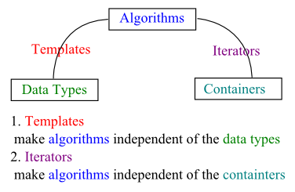

<!DOCTYPE html>

<!-- Mirrored from www.bogotobogo.com/cplusplus/stl3_iterators.php by HTTrack Website Copier/3.x [XR&CO'2014], Mon, 11 Dec 2017 15:02:51 GMT -->
<head>
  <title>C++ Tutorial: STL III - Iterators - 2017</title>
  <meta content="C++ Tutorial: STL III - Iterators" name="description" />
  <meta content="C++ Tutorial, STL III - Iterators, Input Iterators, const_iterator, 
Output Iterators, Forward Iterators, Bidirectional Iterators, Random Access Iterators, Stream Iterators, istream_iterator" name="keywords" />
  <meta name="viewport" content="width=device-width, initial-scale=1">

  <link href="http://netdna.bootstrapcdn.com/bootstrap/3.0.0/css/bootstrap.no-icons.min.css" rel="stylesheet">
  <link href="http://netdna.bootstrapcdn.com/font-awesome/4.0.3/css/font-awesome.css" rel="stylesheet">
  <link rel="stylesheet" href="http://fonts.googleapis.com/css?family=Alice|Open+Sans:400,300,700">
  <link rel="stylesheet" href="../public/css/app.css">
  <link rel="stylesheet" href="../public/css/styles.css">
  <link rel="stylesheet" href="../public/css/bogostyleWidePreNew.css">
</head>

<body class="home">
    <nav class="navbar navbar-default navbar-fixed-top">
    <div class="container-fluid">      
      <div class="navbar-header">
        <!--<button type="button" class="navbar-toggle collapsed" data-toggle="collapse" data-target="#navbar" aria-expanded="false" aria-controls="navbar"> -->
        <button type="button" class="navbar-toggle collapsed" data-toggle="collapse" data-target=".navbar-collapse" aria-expanded="false" aria-controls="navbar"> 
          <span class="sr-only">Toggle navigation</span> 
          <span class="icon-bar"></span> 
          <span class="icon-bar"></span> 
          <span class="icon-bar"></span> 
        </button>
        <a class="navbar-brand" href="../index-2.html">BogoToBogo</a>
      </div>
      
      <div class="navbar-collapse collapse">
        
        <ul class="nav navbar-nav">
          <li class="active"><a href="../index-2.html">Home</a></li>
          <li><a href="../about_us.html">About</a></li>
          <li><a href="../Hadoop/BigData_hadoop_Install_on_ubuntu_single_node_cluster.html">Big Data</a></li>
          <li><a href="../python/scikit-learn/Artificial-Neural-Network-ANN-1-Introduction.html">Machine Learning</a></li>
          <li><a href="../AngularJS/AngularJS_Introduction.html">AngularJS</a></li> 
          <li><a href="../python/pytut.html">Python</a></li>
          <li><a href="cpptut.html">C++</a></li>
          <li><a href="../DevOps/DevOps_Jenkins_Chef_Puppet_Graphite_Logstash.html">DevOps </a></li>
          <li><a href="../Algorithms/algorithms.html">Algorithms</a></li> 
          <li class="dropdown">
            <a href="#" class="dropdown-toggle" data-toggle="dropdown">More...<b class="caret"></b></a>
            <ul class="dropdown-menu">
           
              <li><a href="../Qt/Qt5_Creating_QtQuick2_QML_Application_Animation_A.html">Qt 5</a></li>                           
              <li><a href="../Android/android.html">Android</a></li>
              
              <li><a href="../Linux/linux_tips1.html">Linux</a></li>
              <li><a href="../Java/tutorials/on_java.html">Java</a></li>
              <li><a href="../CSharp/.netframework.html">CSharp</a></li>
              <li><a href="../VideoStreaming/videostreaming_etc.html">Video Streaming</a></li>
              <li><a href="../FFMpeg/ffmpeg_fade_in_fade_out_transitions_effects_filters_slideshow_concat.html">FFmpeg</a></li>
              <li><a href="../Matlab/Matlab_Tutorial_Manipulating_Audio_I_Reverse_Delay_Tone_Control_Changing_Speed_Removing_Vocals.html">Matlab</a></li>
              <li><a href="../python/Django/Python_Django_Forums_Shared_Host.html">Django 1.8</a></li>
              <li><a href="../Laravel5/Laravel5_ToDo_List_Sample.html">Laravel 5.2</a></li>
              <li><a href="../RubyOnRails/RubyOnRails.html">Ruby On Rails</a></li>
              <li><a href="../HTML5/HTML5_Tutorial.html">HTML5 & CSS</a></li>
              <li><a href="../AmazingPlaces/index.html" target="_blank">
Earth</a> </li>
            </ul>
          </li>
        </ul>      
      </div>
    </div>  
  </nav>  

  <div id="main">
    <div class="container">
      <div class="row section featured topspace">
        <div class="row">
          <div class="col-sm-9 col-md-9 col-xs-9">
            <h2 class="section-title">Standard Template Library (STL) III
 - Iterators - 2017        <g:plusone></g:plusone></h2>
            <div class="icon-image">
                 
            </div>
            <div class="SocialLinks">
  <span class='st__large' displayText=''></span>
  <br><br>
  <div align="center">
  <span class='st_facebook_large' displayText='Facebook'></span>
  <span class='st_twitter_large' displayText='Tweet'></span>
  <span class='st_linkedin_large' displayText='LinkedIn'></span>
  </div>
  <br><br>
  <script type="text/javascript" src="http://w.sharethis.com/button/buttons.js"></script>
  <script type="text/javascript">stLight.options({publisher: "b9569c43-5f56-4501-92f0-4bf4aa8fceb0", doNotHash: false, doNotCopy: true, hashAddressBar: false});</script>
</div>

<div id="bookmarkshare">
  <script type="text/javascript">var addthis_config = {"data_track_clickback":true};</script>
  <a class="addthis_button" href="http://www.addthis.com/bookmark.php?v=250&amp;username=khhong7"></a>
  <script type="text/javascript" src="http://s7.addthis.com/js/250/addthis_widget.js#username=khhong7"></script>
</div>

<br>
<hr>
<br>


<!-- Google bogo1 ad -->
<!-- Google search box -->


<!-- bogo1 -->
<div>
  <script async src="http://pagead2.googlesyndication.com/pagead/js/adsbygoogle.js"></script>
  <!-- bogo1 -->
  <ins class="adsbygoogle"
     style="display:inline-block;width:728px;height:90px"
     data-ad-client="ca-pub-4716428189734495"
     data-ad-slot="6542308167"></ins>
  <script>
   (adsbygoogle = window.adsbygoogle || []).push({});
  </script>
</div>


<!-- Google search box -->
<div class="AdSenseSearch">
  bogotobogo.com site search:
  <form action="http://www.google.com/" id="cse-search-box" target="_blank">
    <div>
      <input type="hidden" name="cx" value="partner-pub-4716428189734495:1794050961" />
      <input type="hidden" name="ie" value="UTF-8" />
      <!--<input type="text" name="q" size="55" />-->
      <input type="text" name="q" size="" width="90%"/>
      <input type="submit" name="sa" value="Search" />
    </div>
  </form>
  <script type="text/javascript" src="http://www.google.com/coop/cse/brand?form=cse-search-box&amp;lang=en"></script>
</div>


<hr>
            <br><br><br>
<div class="subtitle" id="iterators">Iterators</div>
<p>Iterators are used to step through the elements of collections of objects.</p>

<!-- Google bogo_square_ad -->
<div>
  <script type="text/javascript">
    google_ad_client = "ca-pub-4716428189734495";
    /* bogo_LargeRectangle_336_280 */
    google_ad_slot = "2712696561";
    google_ad_width = 336;
    google_ad_height = 280;
  </script>
  <script type="text/javascript"
    src="http://pagead2.googlesyndication.com/pagead/show_ads.js">
  </script>
</div>
<br>


<p> 
The major advantage of iterators is that they offer common interfaces for any container type. 
Understanding iterators is probably the key to understand the STL. 
Just as templates make algorithm independent of the type of data stored, 
iterators make the algorithms <strong>independent</strong> of the type of <strong>container</strong> used. 
They are, therefore, an essential component of the STL generic approach.</p>
<br/>

<br/>
<p>Algorithms should be independent of the <strong>data structure</strong> of the 
<strong>container</strong> itself as well as <strong>data type</strong> stored in the container. 
<strong>Templates</strong> provide a generic representation for the data type stored in a container. 
The <strong>iterators</strong> provide a generic representation of the process of moving through the values in a 
container.</p>
<p>An iterator is an object that can navigate over elements of STL containers. 
All iterator represents a certain position in a container. 
To make it work, iterators have the following basic operations which are exactly 
the interface of ordinary pointers when they are used to iterator over the elements of an array.</p>
<ol>
<li><strong>Operator *</strong> <br/>
	Returns the element of the current position. </li>
<li><strong>Operator ++</strong> <br/>
	Lets the iterator step forward to the next element. Most iterators also allow backward stepping with operator --. </li>
<li><strong>Operator == and !=</strong> <br/>
	Check whether two iterators represent the same position. </li>
<li><strong>Operator =</strong> <br/>
	Assigns an iterator (the position of the element to which it refers.</li>
</ol>
<p>Though pointers also have the same properties listed above, there is a difference between pointer and iterators. The difference is that iterators may be <strong>smart pointers</strong> which can iterate over more complicated data structures of containers. The internal behavior of iterators depends on the data structure over which they iterate. So, each container type provides its own kind of iterator. In fact, each container class defines its iterator type as a nested class. As a result, iterators share the same interface but have different types.</p>
<p>All container classes provide the same basic member functions that enable them to use iterators to navigate their elements. The most important two functions are:</p>
<br/>

<br/>
<br/>
<ol>
<li><strong>begin()</strong> <br/>
	This returns iterator that represents the beginning of the elements in the container. The beginning is the position of the first element. </li>
<li><strong>end()</strong> <br/>
	This returns an iterator that represents the end of the elements in the container. The end is the position <strong>behind</strong> the last element. This is also called a <strong>past-the-end iterator</strong>.</li>
</ol>
<p><strong>begin()</strong> and <strong>end()</strong> define a <strong>half-open range</strong> that includes the first element but exclude the last: [begin(),end()). A half-open range has two advantages:</p>
<ol>
<li>We have a simple end criterion for loops that iterate over the elements: They simply march through until they meet <strong>end()</strong>.</li>
<li>It avoids special handling for empty ranges. For empty ranges, <strong>begin</strong> is equal to <strong>end()</strong>.</li>
</ol>
<br/>
<br/>
<div class="subtitle" id="fiveIters">Five Iterators</div>
<p>Different algorithms have different requirements for iterators. 
A <strong>find()</strong> algorithm needs the ++ operator to be defined so 
the iterator can step through the container. It does not need write access but it needs read access. </p>
<pre>
template&lt;class InputIterator, class T&gt;
InputIterator find(InputIterator first, InputIterator last, const T&amp; value);
</pre>
<p>
The <strong>sort()</strong> algorithm, on the other hand, requires random access 
so that it can swap the two non-adjacent elements.</p>
<pre>
template&lt;class RandomAccessIterator&gt;
void sort(RandomAccessIterator first, RandomAccessIterator last);
</pre>
<p>The STL defines five iterators and describes its algorithms in terms of which kinds of iterator it needs.</p>
<ol>
<li><p><strong>Input Iterators</strong> <br/>
	The term <strong>input</strong> is used from the viewpoint of a program. 
In other words, information going from the container to the program is considered input. 
So, an <strong>input iterator</strong> is one that a program can use to read values from a container. 
Dereferencing an input iterator allows us to read a value from a container, 
but it does not allow us to alter the value. So algorithms that require an input iterator are 
algorithms that don't modify values of the container elements.</p>
<p>One-way iterator. It can increment, but it can't back up.</p>
<pre>
#include &lt;iostream&gt;
#include &lt;fstream&gt;
#include &lt;numeric&gt;  // for accumulate()
#include &lt;iterator&gt;  

using namespace std;

int main()
{
  ifstream myInt("data");
  istream_iterator&lt;int&gt; iter(myInt);
  istream_iterator&lt;int&gt; eos;  // end of stream iterator

  cout &lt;&lt; "Sum of the data is "
       &lt;&lt; accumulate(iter, eos, 0)
       &lt;&lt; endl;
  return 0;
}
</pre>
<p>The data file:</p>
<pre>
1 2 3 4 5 6 7 8 9 10
</pre>
<p>Output:</p>
<pre>
Sum of the data is 55
</pre>
<p>Note that accumulate() is from &lt;numeric&gt; and the signature is:</p>
<pre>
accumulate(input_iter, input_iter, value)
</pre>
<p>where the value is usually 0 and it gets the accumulated value over the specified range.</p>
</li>
<li><p><strong>Output Iterators</strong> <br/>
	The term <strong>output</strong> indicates that the iterator is used for moving information 
from a program to a container. An output iterator is similar to an input iterator, 
except that dereferencing is guaranteed to allow a program to modify a value of container element 
but not to read it.</p>
<p>Single-pass and write-only iterator.</p>
</li>
<li><p><strong>Forward Iterators</strong> <br/>
	Forward iterators use only the ++ operators for navigating through a container. 
So a forward iterator can only go forward through a container one element at a time. 
Unlike input and output iterators, however, it necessarily goes through a sequence of values 
in the same order each time we use it.</p>
<p>Multiple-pass iterator.</p>
<p>The example below calculates squares for a given vector using ForwardIterator:</p>
<pre>
/* f.cpp */
#include &lt;iostream&gt;
#include &lt;fstream&gt;
#include &lt;iterator&gt;
#include &lt;vector&gt;

using namespace std;

template&lt;typename ForwardIterator&gt;
void square(ForwardIterator first, ForwardIterator last)
{
  cout &lt;&lt; "Squares:  ";
  for(;first != last; first++) {
    *first = (*first) * (*first);
    cout &lt;&lt; *first &lt;&lt; " ";
  }
  cout &lt;&lt; endl;
}

int main()
{

  int arr[] = {1, 2, 3, 4, 5};

  vector&lt;int&gt; v(arr, arr + sizeof(arr)/sizeof(arr[0]));

  cout &lt;&lt; "Elements: ";
  for(auto it : v ) {
    cout &lt;&lt; it &lt;&lt; " ";
  }
  cout &lt;&lt; endl;

 square(v.begin(), v.end());

  return 0;
}
</pre>
<p>Output:</p>
<pre>
$ g++ -std=c++11 -o f f.cpp
$ ./f
Elements: 1 2 3 4 5 
Squares:  1 4 9 16 25 
</pre>
</li>
<li><p><b>Bidirectional Iterators</b> <br/>
	A bidirectional iterator has all the features of a forward iterator and adds support 
for the two decrement operators (prefix and postfix).</p>
<p>The following code checks if a string is a palindrome. The comparison starts from both ends using bidirectional iterator:</p>
<pre>
#include &lt;iostream&gt;
#include &lt;iterator&gt;
#include &lt;string&gt;

using namespace std;

template&lt;typename Bidirectional&gt;
bool isPalindrome(Bidirectional first, Bidirectional last)
{
  while(true)
  {
    last--;

    // when a character is a space, skip it
    if(*last == ' ') last--;
    if(*first == ' ') first++;
    if(first == last)
      break;

    // case insensitive comparison
    if(tolower(*first) != tolower(*last))
      return false;

    first++;

    if(first == last)
      break;
  }
  return true;
}

int main()
{
    string s[] = {"Never odd or even",
                  "No lemon, no melon",
                  "telnet",
                  "reviver"};

    for(int i = 0; i &lt; 4; i++) {
      cout &lt;&lt; s[i] &lt;&lt; " : "
           &lt;&lt; isPalindrome(s[i].begin(), s[i].end()) &lt;&lt; endl;
    }

}
</pre>
<p>Output:</p>
<pre>
Never odd or even : 1
No lemon, no melon : 1
telnet : 0
reviver : 1
</pre>
</li>
<li><p><strong>Random Access Iterators</strong> <br/>
	Some of the algorithms such as <b>sort()</b> and binary <b>search()</b> 
require the ability to jump directly to an arbitrary element of a container. A canonical algorithm such as the <b>sort()</b> is using RandomAccessIterator:</p>
<pre>
template &lt;class T&gt;
void sort(RandomAccessIterator first, RandomAccessIterator last);
</pre> 
This type of iterator has all the features of a bidirectional iterator, 
plus it adds operations such as pointer addition that support random access 
and relational operations for those of a bidirectional iterators.
<p>The code below outputs a random element of a vector using the RandomAccessIterator:</p>
<pre>
#include &lt;iostream&gt;
#include &lt;iterator&gt;
#include &lt;vector&gt;

/* for ptrdiff_t */
#include &lt;cstddef&gt;

using namespace std;

template &lt;typename Random&gt;
Random getRandomElement(Random first, Random last)
{
  ptrdiff_t d = last - first;
  return first + rand() % d;
}

int main()
{
  vector&lt;int&gt; v(10);
  for(int i = 0; i &lt; v.size(); i++)
    v[i] = i;

  for(int i = 0; i &lt; 20; i++)
    cout &lt;&lt; *getRandomElement(v.begin(), v.end()) &lt;&lt; " ";
  cout &lt;&lt; endl;

  return 0;
}
</pre>
<p>Output:</p>
<pre>
$ g++ -std=c++11 -o r r.cpp
$ ./r
3 6 7 5 3 5 6 2 9 1 2 7 0 9 3 6 0 6 2 6 
</pre>
<p>Note that the <b>ptrdiff_t</b> is the type returned by the pointer subtraction operation between two pointers. THis is a signed integral type.</p>
</li>
</ol>
<br/>
<br/>
<div class="subtitle_2nd" id="const_iterator">const_iterator</div>
<p>A <b>const_iterator</b> is equivalent to <b>pointer to a constant</b>. Iterator itself can change its value but not the underlying element. Another type of iterator is an iterator itself is a constant. This is quite useless since it can iterate among the element of the container. On the contrary, normal iterator can do anything: it can change its underlying elements, it can iterate through the elements of the container by changing its value. Below is an example:</p>
<pre>
#include &lt;iostream&gt;
#include &lt;vector&gt;

using namespace std;

int main(int argc, char **argv)
{
	vector&lt;int&gt; v(10, 0);

	// iterator
	vector&lt;int&gt;::iterator it;
	it = v.begin(); //ok
	*it = 911; // ok
	it++; //ok

	// const_iterator
	vector&lt;int&gt;::const_iterator cit;
	cit = v.begin();
	// *cit = 911; // Error: cannot assign to a variable that is const
	cit++; // ok

	// iterator that is constant
	const vector&lt;int&gt;::iterator itc = v.begin();
	// itc = v.begin();  // Can't assign a new value
	*itc = 911;  // ok: itc can change its underlying element
	itc++; // Error: can't change the value of itc

	return 0;
}
</pre>
<br/>
<br/>
<div class="subtitle_2nd" id="iteratorsexample">Iterators - Example</div>
<p>Here is an example demonstrate the usage of iterators across  several containers.</p>
<pre>
#include &lt;iostream&gt;
#include &lt;vector&gt;
#include &lt;deque&gt;
#include &lt;list&gt;
#include &lt;set&gt;
#include &lt;map&gt;
#include &lt;string&gt;

using namespace std;

int main()
{
	set&lt;int&gt; col_set;
	set&lt;int, greater&lt;int&gt; &gt; col_set2;
	multiset&lt;int&gt; col_mset;
	multimap&lt;int,string&gt; col_mmap;
	map&lt;string,float&gt; col_sfmap;
	vector&lt;int&gt; col_vec;
	deque&lt;float&gt; col_deque;
	list&lt;char&gt; col_list;

	col_set.insert(3);
	col_set.insert(1);
	col_set.insert(5);
	col_set.insert(4);
	col_set.insert(1);
	col_set.insert(6);
	col_set.insert(2);

	set&lt;int&gt;::const_iterator pos_set;
	cout &lt;&lt; "sets in ascending order ";
	for(pos_set = col_set.begin(); pos_set != col_set.end();++pos_set) {
		cout &lt;&lt; *pos_set &lt;&lt; ' ';
	}
	cout &lt;&lt; endl;

	col_set2.insert(3);
	col_set2.insert(1);
	col_set2.insert(5);
	col_set2.insert(4);
	col_set2.insert(1);
	col_set2.insert(6);
	col_set2.insert(2);

	set&lt;int,greater&lt;int&gt; &gt;::const_iterator pos_set2;
	cout &lt;&lt; "sets in descending order ";
	for(pos_set2 = col_set2.begin(); pos_set2 != col_set2.end();++pos_set2) {
		cout &lt;&lt; *pos_set2 &lt;&lt; ' ';
	}
	cout &lt;&lt; endl;

	col_mset.insert(3);
	col_mset.insert(1);
	col_mset.insert(5);
	col_mset.insert(4);
	col_mset.insert(1);
	col_mset.insert(6);
	col_mset.insert(2);

	multiset&lt;int&gt;::const_iterator pos_mset;
	cout &lt;&lt; "multi sets in ascending order " &lt;&lt; endl;
	for(pos_mset=col_mset.begin();pos_mset!=col_mset.end();++pos_mset) {
		cout &lt;&lt; *pos_mset &lt;&lt; ' ';
	}
	cout &lt;&lt; endl;

	col_mmap.insert(make_pair(5,"tagged"));
	col_mmap.insert(make_pair(2,"a"));
	col_mmap.insert(make_pair(1,"this"));
	col_mmap.insert(make_pair(4,"of"));
	col_mmap.insert(make_pair(6,"strings"));
	col_mmap.insert(make_pair(1,"is"));
	col_mmap.insert(make_pair(3,"map"));

	multimap&lt;int,string&gt;::const_iterator pos_mmap;
	cout &lt;&lt; "multi maps in ascending order " &lt;&lt; endl;
	for(pos_mmap=col_mmap.begin(); pos_mmap != col_mmap.end();++pos_mmap) {
		cout &lt;&lt;"(" &lt;<pos_mmap->first&lt;&lt;"," &lt;&lt; pos_mmap-&gt;second&lt;&lt; ")";				 
	}
	cout &lt;&lt; endl;

	cout &lt;&lt; "Associate Array: an array in which the index \n" &lt;&lt;
		    "may be of an arbitrary type \n" &lt;&lt;
		     "string-float map" &lt;&lt; endl;
	col_sfmap["PI"] = 3.1415;
	col_sfmap["an arbitrary number"] = 4983.223;
	col_sfmap["Null"] = 0;

	map&lt;string,float&gt;::iterator pos_sfmap;
	for(pos_sfmap = col_sfmap.begin(); pos_sfmap != col_sfmap.end();++pos_sfmap) {
		cout &lt;&lt; "key: \"" &lt;&lt; pos_sfmap-&gt;first &lt;&lt; "\" "
			&lt;&lt; "value: " &lt;&lt; pos_sfmap-&gt;second &lt;&lt; endl;
	}

	cout &lt;&lt; "vector, list &amp; deque";
	for (int i = 1;i &lt;= 6; i++) {
		col_vec.push_back(i);
		col_deque.push_front(static_cast&lt;double&gt;(i)*1.1);
	}

	for(char c = 'a';c &lt;= 'z'; ++c) {
		col_list.push_back(c);
	}

	for (int i=0; i &lt; col_vec.size() ; i++) {
		cout &lt;&lt; col_vec[i] &lt;&lt;' ';
	}
	cout &lt;&lt; endl;
	for (int i = 0; i &lt; col_deque.size() ; i++) {
		cout &lt;&lt; col_deque[i] &lt;&lt;' ';
	}
	cout &lt;&lt; endl;

	//constant version iterator (read only)
	cout &lt;&lt; " using constant iterator \n";
	list&lt;char&gt;:: const_iterator pos;
	for(pos = col_list.begin();pos!=col_list.end();pos++) {
		cout &lt;&lt; *pos &lt;&lt; ' ';
	}
	cout &lt;&lt; endl;

	//non-constant version iterator (read and write)
	cout &lt;&lt; " using non_constant iterator \n";
	list&lt;char&gt;:: iterator ncpos;
	// note that the preincrement operator(prefix ++) is used here.
	// postincrement(++) is slower because it should return
	// the old position.
	for(ncpos = col_list.begin(); ncpos != col_list.end(); ++ncpos) {
		*ncpos = toupper(*ncpos);
		cout &lt;&lt; *ncpos &lt;&lt; ' ';
	}
	cout &lt;&lt; endl;

	cout &lt;&lt; " list output using while \n";
	while(!col_list.empty()) {
		cout &lt;&lt; col_list.front() &lt;&lt; ' ';
		col_list.pop_front();
	}
	cout &lt;&lt; endl;

	return 0;
}
</pos_mmap-></pre>
<p>The output is: </p>
<pre>
sets in ascending order 1 2 3 4 5 6
sets in descending order 6 5 4 3 2 1
multi sets in ascending order
1 1 2 3 4 5 6
multi maps in ascending order
(1,this)(1,is)(2,a)(3,map)(4,of)(5,tagged)(6,strings)
Associate Array: an array in which the index
may be of an arbitrary type
string-float map
key: "Null" value: 0
key: "PI" value: 3.1415
key: "an arbitrary number" value: 4983.22
vector, list &amp; deque1 2 3 4 5 6
6.6 5.5 4.4 3.3 2.2 1.1
 using constant iterator
a b c d e f g h i j k l m n o p q r s t u v w x y z
 using non_constant iterator
A B C D E F G H I J K L M N O P Q R S T U V W X Y Z
 list output using while
A B C D E F G H I J K L M N O P Q R S T U V W X Y Z
</pre>
<br/>
<br/>
<div class="subtitle" id="copy_algorithm">copy() algorithm with ostream_iterator and istream_iterator</div>
<p>STL's <strong>copy()</strong> function copies elements from a range to a location identified by an iterator:</p>
<pre>
template&lt;class InputIterator, class OutputIterator&gt;
OutputIterator copy(InputIterator first,	// beginning of source
			InputIterator last, 	// end of source
			OutputIterator result)	// beginning of destination
{
	while (first != last) {
		*result = *first;
		++first;
		++result;
	}
	return result;
);
</pre>
<p>The <strong>copy()</strong> function copies the elements in the range <strong>[first,last)</strong> into the 
range <strong>[result, result + (lat - first))</strong>. 
It returns an iterator pointing one past the last copied-to location, 
<strong>result + (last - first)</strong>. The <strong>result</strong> should not be in the range <strong>[first, last)</strong>.
In other words, the target can't overlap the source.</p>
<p>The <strong>copy()</strong> algorithm can copy data from one container to another. For example, it can copy an array into a vector:</p>
<pre>
#include &lt;iostream&gt;
#include &lt;vector&gt;
#include &lt;algorithm&gt;
using namespace std;

int main()
{
	int myInt[] = {1,2,3,4,5};
	vector&lt;int&gt; v(sizeof(myInt)/sizeof(int));

	// copy array to vector
	<font color="red">copy(myInt, myInt+5, v.begin());</font>

	//display elements
	vector&lt;int&gt;::const_iterator it;
	for(it = v.begin(); it != v.end(); ++it) {
		cout &lt;&lt; *it &lt;&lt; " " ;
	}

	return 0;
}
</pre>
<p>The <strong>copy()</strong> function overwrites existing data in the destination container. So, 
the container should be large enough to hold the copied elements. As a result, we can't simply 
use <strong>copy()</strong> to put data in an empty vector. </p>
<p>In the example, we displayed the elements after we copied the elements. 
If there is an iterator representing the output stream, we can use it with <strong>copy()</strong>.
STL provides us such an iterator with the <strong>ostream_iterator</strong> template. It is an <strong>adapter</strong> 
, which is a class or function that converts an interface to another interface.. The following lines are doing 
exactly that:</p>
<pre>
#include &lt;iterator&gt;
ostream_iterator&lt;int, char&gt; myOutputIterator(cout, " ");
</pre>
<p>The <strong>myOutputIterator</strong> iterator now becomes an interface that allows us to use <strong>cout</strong> 
for display. The first template argument, <strong>int</strong>, indicates the data type being sent to the output stream.
The second template argument, <strong>char</strong>, indicates that the output stream uses character type. 
The <strong>cout</strong> which is the first constructor argument identifies the output steam being used. The 
character string argument is a separator to be displayed after each item sent to the output stream.</p>
<p>We could use the iterator something like this:</p>
<pre>
*myOutputIterator++ = 2013;
</pre>
<p>It works like:</p>
<pre>
cout &lt;&lt; 2013 &lt;&lt; " ";
</pre>
<p>This <strong>ostream_iterator</strong>, the line says send <strong>2013</strong> and then a string " " to the 
output stream controlled by <strong>cout</strong>. With <strong>copy()</strong>, we can use the iterator like this:</p>
<pre>
copy(v.begin(), v.end(), myOutputIterator);
</pre>
<p>This copies the entire <strong>v</strong> container to the output stream. In other words, it displays the all 
the contents of the <strong>v</strong>:</p>
<pre>
include &lt;iostream&gt;
#include &lt;vector&gt;
#include &lt;algorithm&gt;
<font color="red">#include &lt;iterator&gt;</font>
using namespace std;

int main()
{
	int myInt[] = {1,2,3,4,5};
	vector&lt;int&gt; v(sizeof(myInt)/sizeof(int));

	// copy array to vector
	copy(myInt, myInt+5, v.begin());

	// display elements
	<font color="red">ostream_iterator&lt;int, char&gt; myOutputIterator(cout, " ");
	copy(v.begin(), v.end(), myOutputIterator);</font>

	return 0;
}
</pre>
<p>Actually, we do not need named iterator, <strong>myOutputIterator</strong>, 
for our display, and use an anonymous iterator:</p>
<pre>
copy(v.begin(), v.end(), ostream_iterator<int,char>(cout," "));
</int,char></pre>
<p>Instead of </p>
<pre>
// display elements
ostream_iterator&lt;int, char&gt; myOutputIterator(cout, " ");
copy(v.begin(), v.end(), myOutputIterator);
</pre>
<br/><br/>

<br/><br/>

<div>
    
<div class="custom-disqus">
<!-- Disqus -->
<div id="disqus_thread"></div>
<script>
    /**
     *  RECOMMENDED CONFIGURATION VARIABLES: EDIT AND UNCOMMENT THE SECTION BELOW TO INSERT DYNAMIC VALUES FROM YOUR PLATFORM OR CMS.
     *  LEARN WHY DEFINING THESE VARIABLES IS IMPORTANT: https://disqus.com/admin/universalcode/#configuration-variables
     */
     
/* Disabling Disqus 4/26/2017
    var disqus_config = function () {
        this.page.url = window.location.href;
        this.page.identifier = document.title;
    };
    
    (function() {  // REQUIRED CONFIGURATION VARIABLE: EDIT THE SHORTNAME BELOW
        var d = document, s = d.createElement('script');
        
        s.src = '//bogotobogocom.disqus.com/embed.js';  // IMPORTANT: Replace EXAMPLE with your forum shortname!
        
        s.setAttribute('data-timestamp', +new Date());
        (d.head || d.body).appendChild(s);
    })();
 Disabling Disqus */    
</script>
<noscript>Please enable JavaScript to view the <a href="https://disqus.com/?ref_noscript" rel="nofollow">comments powered by Disqus.</a></noscript>

<!-- Disqus ends here -->
</div>

<br>
<br>
<br>
<br></div>
          </div>
          <div class="col-sm-3 col-md-3 col-xs-3">
  	    <div class="g-person" data-width="1" data-href="//plus.google.com/111664369941456137911" data-rel="author">
  	    </div>
            <div class="resume">
              <p>Ph.D. / Golden Gate Ave, San Francisco / Seoul National Univ / Carnegie Mellon / UC Berkeley / DevOps / Deep Learning / Visualization</p>
            </div>
  	    <div>
                
<div class="skyscraper">
  <br>


<div class="skyscraper">

  <div class="bogo-paypal">
    <!-- Paypal Donate button -->
    <p><i>Sponsor Open Source development activities and free contents for everyone.</i></p>

    <form action="https://www.paypal.com/cgi-bin/webscr" method="post" target="_top">
    <input type="hidden" name="cmd" value="_s-xclick">
    <input type="hidden" name="encrypted" value="-----BEGIN PKCS7-----MIIHRwYJKoZIhvcNAQcEoIIHODCCBzQCAQExggEwMIIBLAIBADCBlDCBjjELMAkGA1UEBhMCVVMxCzAJBgNVBAgTAkNBMRYwFAYDVQQHEw1Nb3VudGFpbiBWaWV3MRQwEgYDVQQKEwtQYXlQYWwgSW5jLjETMBEGA1UECxQKbGl2ZV9jZXJ0czERMA8GA1UEAxQIbGl2ZV9hcGkxHDAaBgkqhkiG9w0BCQEWDXJlQHBheXBhbC5jb20CAQAwDQYJKoZIhvcNAQEBBQAEgYC0In+maN+zseQtRj6SJqP9kj2LLvKf0yFklTm01uHY7UwgB3YJ0MZwvi6iERXfh4x2/KVYyMzY6elATG68c3gd6gb0Pqca380dXCg2Xua8jlW0pTZ3UabUNkpYi0iIwMSUsvWKbIw9eX8cBljOrYU1CXNuk46c0Yz2J3lGG+xCZTELMAkGBSsOAwIaBQAwgcQGCSqGSIb3DQEHATAUBggqhkiG9w0DBwQI23eIgGIDbFqAgaDMolOA+os0Y06D0j9NgHZJahDCSSl3deolhu6gz8hNd0SKwNAMBDPd5LBjJ7v6QgReCprB9L2E6CVpXZwgyLnzPC/wHbQG0Qd9sc/CqbiFy2FaJodDtPbRS8mOh+aHph0pNXgZ2kRA8uqVGIRF5gc0d6wqx7+NrPK5FehCMWoGGTmfTTMlykPVQhwDAY8+QFNSbCnqih5GXX62XpkmMJWFoIIDhzCCA4MwggLsoAMCAQICAQAwDQYJKoZIhvcNAQEFBQAwgY4xCzAJBgNVBAYTAlVTMQswCQYDVQQIEwJDQTEWMBQGA1UEBxMNTW91bnRhaW4gVmlldzEUMBIGA1UEChMLUGF5UGFsIEluYy4xEzARBgNVBAsUCmxpdmVfY2VydHMxETAPBgNVBAMUCGxpdmVfYXBpMRwwGgYJKoZIhvcNAQkBFg1yZUBwYXlwYWwuY29tMB4XDTA0MDIxMzEwMTMxNVoXDTM1MDIxMzEwMTMxNVowgY4xCzAJBgNVBAYTAlVTMQswCQYDVQQIEwJDQTEWMBQGA1UEBxMNTW91bnRhaW4gVmlldzEUMBIGA1UEChMLUGF5UGFsIEluYy4xEzARBgNVBAsUCmxpdmVfY2VydHMxETAPBgNVBAMUCGxpdmVfYXBpMRwwGgYJKoZIhvcNAQkBFg1yZUBwYXlwYWwuY29tMIGfMA0GCSqGSIb3DQEBAQUAA4GNADCBiQKBgQDBR07d/ETMS1ycjtkpkvjXZe9k+6CieLuLsPumsJ7QC1odNz3sJiCbs2wC0nLE0uLGaEtXynIgRqIddYCHx88pb5HTXv4SZeuv0Rqq4+axW9PLAAATU8w04qqjaSXgbGLP3NmohqM6bV9kZZwZLR/klDaQGo1u9uDb9lr4Yn+rBQIDAQABo4HuMIHrMB0GA1UdDgQWBBSWn3y7xm8XvVk/UtcKG+wQ1mSUazCBuwYDVR0jBIGzMIGwgBSWn3y7xm8XvVk/UtcKG+wQ1mSUa6GBlKSBkTCBjjELMAkGA1UEBhMCVVMxCzAJBgNVBAgTAkNBMRYwFAYDVQQHEw1Nb3VudGFpbiBWaWV3MRQwEgYDVQQKEwtQYXlQYWwgSW5jLjETMBEGA1UECxQKbGl2ZV9jZXJ0czERMA8GA1UEAxQIbGl2ZV9hcGkxHDAaBgkqhkiG9w0BCQEWDXJlQHBheXBhbC5jb22CAQAwDAYDVR0TBAUwAwEB/zANBgkqhkiG9w0BAQUFAAOBgQCBXzpWmoBa5e9fo6ujionW1hUhPkOBakTr3YCDjbYfvJEiv/2P+IobhOGJr85+XHhN0v4gUkEDI8r2/rNk1m0GA8HKddvTjyGw/XqXa+LSTlDYkqI8OwR8GEYj4efEtcRpRYBxV8KxAW93YDWzFGvruKnnLbDAF6VR5w/cCMn5hzGCAZowggGWAgEBMIGUMIGOMQswCQYDVQQGEwJVUzELMAkGA1UECBMCQ0ExFjAUBgNVBAcTDU1vdW50YWluIFZpZXcxFDASBgNVBAoTC1BheVBhbCBJbmMuMRMwEQYDVQQLFApsaXZlX2NlcnRzMREwDwYDVQQDFAhsaXZlX2FwaTEcMBoGCSqGSIb3DQEJARYNcmVAcGF5cGFsLmNvbQIBADAJBgUrDgMCGgUAoF0wGAYJKoZIhvcNAQkDMQsGCSqGSIb3DQEHATAcBgkqhkiG9w0BCQUxDxcNMTUwOTA2MTYwNDAxWjAjBgkqhkiG9w0BCQQxFgQUuyx70nay4O6eJQs3x4WiAm4/7DkwDQYJKoZIhvcNAQEBBQAEgYAN7yS/34G8dBK6CfFf5g4rQk/H8s7D/aUmIzppGWOoXR7nZuXQo99wSBlQsPdeFtB+a+NNapf6lC4ibUTjgSpbu1gscGHH4Y+QtXl03bt5qgaSoFhZsCJKubwRHPHGHDGVx+tQmQ2DHk09lXjjL61FpB6iqkiFFvw4vfixsoeI6g==-----END PKCS7-----
    ">
    <input type="image" src="https://www.paypalobjects.com/webstatic/en_US/btn/btn_donate_pp_142x27.png" border="0" name="submit" alt="PayPal - The safer, easier way to pay online!">
    
    </form>
    <p><i>Thank you.</i></p>
    <p>- <a href="../about_us.html" target="_blank">K Hong</a></p>
    <!-- End of Paypal Donate button   -->
  </div>


  <script async src="http://pagead2.googlesyndication.com/pagead/js/adsbygoogle.js"></script>
  <!-- bogo_skyscraper -->
  <ins class="adsbygoogle"
       style="display:inline-block;width:160px;height:600px"
       data-ad-client="ca-pub-4716428189734495"
       data-ad-slot="5321096966"></ins>
  <script>
  (adsbygoogle = window.adsbygoogle || []).push({});
  </script>


  <br><br>


</div></div>


<!-- Place this tag after the last widget tag. -->
<script type="text/javascript">
        (function() {
          var po = document.createElement('script'); po.type = 'text/javascript'; po.async = true;
          po.src = 'https://apis.google.com/js/platform.js';
          var s = document.getElementsByTagName('script')[0]; s.parentNode.insertBefore(po, s);
        })();
</script>
  	    </div>
  	    <div class="side_menu">
                <br /><br />

<div class="skyscraper">
  <br>


<div class="skyscraper">

  <div class="bogo-paypal">
    <!-- Paypal Donate button -->
    <p><i>Sponsor Open Source development activities and free contents for everyone.</i></p>

    <form action="https://www.paypal.com/cgi-bin/webscr" method="post" target="_top">
    <input type="hidden" name="cmd" value="_s-xclick">
    <input type="hidden" name="encrypted" value="-----BEGIN PKCS7-----MIIHRwYJKoZIhvcNAQcEoIIHODCCBzQCAQExggEwMIIBLAIBADCBlDCBjjELMAkGA1UEBhMCVVMxCzAJBgNVBAgTAkNBMRYwFAYDVQQHEw1Nb3VudGFpbiBWaWV3MRQwEgYDVQQKEwtQYXlQYWwgSW5jLjETMBEGA1UECxQKbGl2ZV9jZXJ0czERMA8GA1UEAxQIbGl2ZV9hcGkxHDAaBgkqhkiG9w0BCQEWDXJlQHBheXBhbC5jb20CAQAwDQYJKoZIhvcNAQEBBQAEgYC0In+maN+zseQtRj6SJqP9kj2LLvKf0yFklTm01uHY7UwgB3YJ0MZwvi6iERXfh4x2/KVYyMzY6elATG68c3gd6gb0Pqca380dXCg2Xua8jlW0pTZ3UabUNkpYi0iIwMSUsvWKbIw9eX8cBljOrYU1CXNuk46c0Yz2J3lGG+xCZTELMAkGBSsOAwIaBQAwgcQGCSqGSIb3DQEHATAUBggqhkiG9w0DBwQI23eIgGIDbFqAgaDMolOA+os0Y06D0j9NgHZJahDCSSl3deolhu6gz8hNd0SKwNAMBDPd5LBjJ7v6QgReCprB9L2E6CVpXZwgyLnzPC/wHbQG0Qd9sc/CqbiFy2FaJodDtPbRS8mOh+aHph0pNXgZ2kRA8uqVGIRF5gc0d6wqx7+NrPK5FehCMWoGGTmfTTMlykPVQhwDAY8+QFNSbCnqih5GXX62XpkmMJWFoIIDhzCCA4MwggLsoAMCAQICAQAwDQYJKoZIhvcNAQEFBQAwgY4xCzAJBgNVBAYTAlVTMQswCQYDVQQIEwJDQTEWMBQGA1UEBxMNTW91bnRhaW4gVmlldzEUMBIGA1UEChMLUGF5UGFsIEluYy4xEzARBgNVBAsUCmxpdmVfY2VydHMxETAPBgNVBAMUCGxpdmVfYXBpMRwwGgYJKoZIhvcNAQkBFg1yZUBwYXlwYWwuY29tMB4XDTA0MDIxMzEwMTMxNVoXDTM1MDIxMzEwMTMxNVowgY4xCzAJBgNVBAYTAlVTMQswCQYDVQQIEwJDQTEWMBQGA1UEBxMNTW91bnRhaW4gVmlldzEUMBIGA1UEChMLUGF5UGFsIEluYy4xEzARBgNVBAsUCmxpdmVfY2VydHMxETAPBgNVBAMUCGxpdmVfYXBpMRwwGgYJKoZIhvcNAQkBFg1yZUBwYXlwYWwuY29tMIGfMA0GCSqGSIb3DQEBAQUAA4GNADCBiQKBgQDBR07d/ETMS1ycjtkpkvjXZe9k+6CieLuLsPumsJ7QC1odNz3sJiCbs2wC0nLE0uLGaEtXynIgRqIddYCHx88pb5HTXv4SZeuv0Rqq4+axW9PLAAATU8w04qqjaSXgbGLP3NmohqM6bV9kZZwZLR/klDaQGo1u9uDb9lr4Yn+rBQIDAQABo4HuMIHrMB0GA1UdDgQWBBSWn3y7xm8XvVk/UtcKG+wQ1mSUazCBuwYDVR0jBIGzMIGwgBSWn3y7xm8XvVk/UtcKG+wQ1mSUa6GBlKSBkTCBjjELMAkGA1UEBhMCVVMxCzAJBgNVBAgTAkNBMRYwFAYDVQQHEw1Nb3VudGFpbiBWaWV3MRQwEgYDVQQKEwtQYXlQYWwgSW5jLjETMBEGA1UECxQKbGl2ZV9jZXJ0czERMA8GA1UEAxQIbGl2ZV9hcGkxHDAaBgkqhkiG9w0BCQEWDXJlQHBheXBhbC5jb22CAQAwDAYDVR0TBAUwAwEB/zANBgkqhkiG9w0BAQUFAAOBgQCBXzpWmoBa5e9fo6ujionW1hUhPkOBakTr3YCDjbYfvJEiv/2P+IobhOGJr85+XHhN0v4gUkEDI8r2/rNk1m0GA8HKddvTjyGw/XqXa+LSTlDYkqI8OwR8GEYj4efEtcRpRYBxV8KxAW93YDWzFGvruKnnLbDAF6VR5w/cCMn5hzGCAZowggGWAgEBMIGUMIGOMQswCQYDVQQGEwJVUzELMAkGA1UECBMCQ0ExFjAUBgNVBAcTDU1vdW50YWluIFZpZXcxFDASBgNVBAoTC1BheVBhbCBJbmMuMRMwEQYDVQQLFApsaXZlX2NlcnRzMREwDwYDVQQDFAhsaXZlX2FwaTEcMBoGCSqGSIb3DQEJARYNcmVAcGF5cGFsLmNvbQIBADAJBgUrDgMCGgUAoF0wGAYJKoZIhvcNAQkDMQsGCSqGSIb3DQEHATAcBgkqhkiG9w0BCQUxDxcNMTUwOTA2MTYwNDAxWjAjBgkqhkiG9w0BCQQxFgQUuyx70nay4O6eJQs3x4WiAm4/7DkwDQYJKoZIhvcNAQEBBQAEgYAN7yS/34G8dBK6CfFf5g4rQk/H8s7D/aUmIzppGWOoXR7nZuXQo99wSBlQsPdeFtB+a+NNapf6lC4ibUTjgSpbu1gscGHH4Y+QtXl03bt5qgaSoFhZsCJKubwRHPHGHDGVx+tQmQ2DHk09lXjjL61FpB6iqkiFFvw4vfixsoeI6g==-----END PKCS7-----
    ">
    <input type="image" src="https://www.paypalobjects.com/webstatic/en_US/btn/btn_donate_pp_142x27.png" border="0" name="submit" alt="PayPal - The safer, easier way to pay online!">
    
    </form>
    <p><i>Thank you.</i></p>
    <p>- <a href="../about_us.html" target="_blank">K Hong</a></p>
    <!-- End of Paypal Donate button   -->
  </div>


  <script async src="http://pagead2.googlesyndication.com/pagead/js/adsbygoogle.js"></script>
  <!-- bogo_skyscraper -->
  <ins class="adsbygoogle"
       style="display:inline-block;width:160px;height:600px"
       data-ad-client="ca-pub-4716428189734495"
       data-ad-slot="5321096966"></ins>
  <script>
  (adsbygoogle = window.adsbygoogle || []).push({});
  </script>


  <br><br>


</div></div>

<!-- cplusplus_list_INNER.php -->
<br><br><br>
<h1>C++ Tutorials</h1>
   <a href="cpptut.html">C++ Home</a> 
   <br><br>
   <a href="../Algorithms/algorithms.html">Algorithms & Data Structures in C++ ...</a>
   <br><br>
   <a href="application_visual_studio_2013.html">Application (UI) - using Windows Forms (Visual Studio 2013/2012)</a>
   <br><br>
   <a href="autoptr.html">auto_ptr</a>
   <br><br>
   <a href="binarytree.html">Binary Tree Example Code</a>
   <br><br>
   <a href="blackjackQT.html">Blackjack with Qt</a>
   <br><br>
   <a href="boost.html">Boost - shared_ptr, weak_ptr, mpl, lambda, etc.</a>
   <br><br>
   <a href="Boost/boost_AsynchIO_asio_tcpip_socket_server_client_timer_A.html">Boost.Asio (Socket Programming - Asynchronous TCP/IP)...</a>
   <br><br>
   <a href="class.html">Classes and Structs</a> 
   <br><br>
   <a href="constructor.html">Constructor</a> 
   <br><br>
   <a href="cplusplus11.html">C++11(C++0x): rvalue references, move constructor, and lambda, etc.</a> 
   <br><br>
   <a href="cpptesting.html">C++ API Testing</a>
   <br><br>
   <a href="cplusplus_keywords.html">C++ Keywords - const, volatile, etc.</a>
   <br><br>
   <a href="CppCrashDebuggingMemoryLeak.html">Debugging Crash & Memory Leak</a>
   <br><br>
   <a href="../DesignPatterns/introduction.html">Design Patterns in C++ ...</a>
   <br><br>
   <a href="dynamic_cast.html">Dynamic Cast Operator</a>
   <br><br>
   <a href="eclipse_CDT_JNI_MinGW_64bit.html">Eclipse CDT / JNI (Java Native Interface) / MinGW</a>
   <br><br>
   <a href="embeddedSystemsProgramming.html">Embedded Systems Programming I - Introduction</a>
   <br><br>
   <a href="embeddedSystemsProgramming_gnu_toolchain_ARM_cross_compiler.html">Embedded Systems Programming II - gcc ARM Toolchain and Simple Code on Ubuntu and Fedora</a>
   <br><br>
   <a href="embeddedSystemsProgramming_GNU_ARM_ToolChain_Eclipse_CDT_plugin.html">Embedded Systems Programming III - Eclipse CDT Plugin for gcc ARM Toolchain </a>
   <br><br>
   <a href="exceptions.html">Exceptions</a> 
   <br><br>
   <a href="friendclass.html">Friend Functions and Friend Classes</a>
   <br><br>
   <a href="fstream_input_output.html">fstream: input & output</a>
   <br><br>
   <a href="function_overloading.html">Function Overloading</a>
   <br><br>
   <a href="functor_function_object_stl_intro.html">Functors (Function Objects) I - Introduction</a>
   <br><br>
   <a href="functor_function_object_stl_2.html">Functors (Function Objects) II - Converting function to functor</a>
   <br><br>
   <a href="functors.html">Functors (Function Objects) - General</a>
   <br><br>
   <br><br>
   <a href="Git/Git_GitHub_Express.html">Git and GitHub Express...</a>
   <br><br>
   <a href="google_unit_test_gtest.html">GTest (Google Unit Test) with Visual Studio 2012</a>
   <br><br>
   <a href="multipleinheritance.html">Inheritance & Virtual Inheritance (multiple inheritance) </a>
   <br><br>
   <a href="libraries.html">Libraries - Static, Shared (Dynamic)</a>
   <br><br>
   <a href="linked_list_basics.html">Linked List Basics</a>
   <br><br>
   <a href="linkedlist.html">Linked List Examples</a>
   <br><br>
   <a href="make.html">make & CMake</a>
   <br><br>
   <a href="gnumake.html">make (gnu)</a>
   <br><br>
   <a href="memoryallocation.html">Memory Allocation</a>
   <br><br>
   <a href="multithreaded.html">Multi-Threaded Programming - Terminology - Semaphore, Mutex, Priority Inversion etc.</a>
   <br><br>
   <a href="multithreading_win32A.html">Multi-Threaded Programming II -  Native Thread for Win32 (A) </a>
   <br><br>
   <a href="multithreading_win32B.html">Multi-Threaded Programming II -  Native Thread for Win32 (B) </a>
   <br><br>
   <a href="multithreading_win32C.html">Multi-Threaded Programming II -  Native Thread for Win32 (C) </a>
   <br><br>
   <a href="multithreading_win32.html">Multi-Threaded Programming II - C++ Thread for Win32</a>
   <br><br>
   <a href="multithreading_pthread.html">Multi-Threaded Programming III - C/C++ Class Thread for Pthreads</a>
   <br><br>
   <a href="multithreading_ipc.html">MultiThreading/Parallel Programming - IPC</a>
   <br><br>
   <a href="multithreaded4_cplusplus11.html">Multi-Threaded Programming with C++11 Part A (start, join(), detach(), and ownership)</a>
   <br><br>
   <a href="multithreaded4_cplusplus11B.html">Multi-Threaded Programming with C++11 Part B (Sharing Data - mutex, and race conditions, and deadlock)</a>
   <br><br>
   <a href="multithreadedDebugging.html">Multithread Debugging</a>
   <br><br>
   <a href="object_returning.html">Object Returning</a>
   <br><br>
   <a href="slicing.html">Object Slicing and Virtual Table</a>
   <br><br>
   <a href="opencv.html">OpenCV with C++</a> 
   <br><br>
   <a href="operatoroverloading.html">Operator Overloading I</a> 
   <br><br>
   <a href="operator_oveloading_self_assignment.html">Operator Overloading II - self assignment</a> 
   <br><br>
   <a href="valuevsreference.html">Pass by Value vs. Pass by Reference</a>
   <br><br>
   <a href="pointers.html">Pointers</a>
   <br><br>
   <a href="pointers2_voidpointers_arrays.html">Pointers II - void pointers & arrays</a>
   <br><br>
   <a href="pointers3_function_multidimensional_arrays.html">Pointers III - pointer to function & multi-dimensional arrays</a>
   <br><br>
   <a href="preprocessor_macro.html">Preprocessor - Macro</a>
   <br><br>
   <a href="private_inheritance.html">Private Inheritance</a>
   <br><br>
   <a href="../python/python_cpp_sip.html">Python & C++ with SIP</a>
   <br><br>
   <a href="RandomNumbers.html">(Pseudo)-random numbers in C++</a>
   <br><br>
   <a href="references.html">References for Built-in Types</a>
   <br><br>
   <a href="sockets_server_client.html">Socket - Server & Client</a>
   <br><br>
    <a href="sockets_server_client_QT.html">Socket - Server & Client with Qt (Asynchronous / Multithreading / ThreadPool etc.)</a>
   <br><br>
   <a href="stackunwinding.html">Stack Unwinding</a>
   <br><br>
   <a href="stl_vector_list.html">Standard Template Library (STL) I - Vector & List</a>
   <br><br>
   <a href="stl2_map.html">Standard Template Library (STL) II - Maps</a>
   <br><br>
   <a href="stl2_unorderd_map_cpp11_hash_table_hash_function.html">Standard Template Library (STL) II - unordered_map</a>
   <br><br>
   <a href="stl2B_set.html">Standard Template Library (STL) II - Sets</a>
   <br><br>
   <a href="stl3_iterators.html">Standard Template Library (STL) III - Iterators</a>
   <br><br>
   <a href="stl4_algorithms.html">Standard Template Library (STL) IV - Algorithms</a>
   <br><br>
   <a href="stl5_function_objects.html">Standard Template Library (STL) V - Function Objects</a>
   <br><br>
   <a href="statics.html">Static Variables and Static Class Members</a>
   <br><br>
   <a href="string.html">String</a> 
   <br><br>
   <a href="string2.html">String II - sstream etc.</a> 
   <br><br>
   <a href="assembly.html">Taste of Assembly</a>
   <br><br>
   <a href="templates.html">Templates</a>
   <br><br>
   <a href="template_specialization_function_class.html">Template Specialization</a>
   <br><br>
   <a href="template_specialization_traits.html">Template Specialization - Traits</a>
   <br><br>
   <a href="template_declaration_definition_header_implementation_file.html">Template Implementation & Compiler (.h or .cpp?)</a>
   <br><br>
   <a href="this_pointer.html">The this Pointer</a>
   <br><br>
   <a href="typecast.html">Type Cast Operators</a>
   <br><br>
   <a href="upcasting_downcasting.html">Upcasting and Downcasting</a>
   <br><br>
   <a href="virtual_destructors_shared_ptr.html">Virtual Destructor & boost::shared_ptr</a>
   <br><br>
   <a href="virtualfunctions.html">Virtual Functions</a>
   <br><br>
   <br><br>
   <i>Programming Questions and Solutions &darr;</i>
      <br><br>
       <a href="quiz_strings_arrays.html">Strings and Arrays</a>
       <br><br>
       <a href="quiz_linkedlist.html">Linked List</a>
       <br><br>
       <a href="quiz_recursion.html">Recursion</a>
       <br><br>
       <a href="quiz_bit_manipulation.html">Bit Manipulation</a> 
       <br><br>
       <a href="smallprograms.html">Small Programs (string, memory functions etc.)</a>
       <br><br>
       <a href="quiz_math_probability.html">Math & Probability</a>
       <br><br>
       <a href="quiz_multithreading.html">Multithreading</a>
       <br><br>
       <a href="google_interview_questions.html">140 Questions by Google</a> 
       <br><br>
       <br><br>
   <a href="../Qt/Qt5_Creating_QtQuick2_QML_Application_Animation_A.html">Qt 5 EXPRESS...</a>
   <br><br>
   <a href="../Win32API/Win32API_DLL.html">Win32 DLL ...</a>
   <br><br>
   <a href="cppNews.html">Articles On C++</a> 
   <br><br>
   <a href="C11/C11_initializer_list.html">What's new in C++11...</a> 
   <br><br>
   <a href="C11/1_C11_creating_thread.html">C++11 Threads EXPRESS...</a> 
   <br><br>
   <a href="../OpenCV/opencv_3_tutorial_imgproc_gausian_median_blur_bilateral_filter_image_smoothing.html">OpenCV...</a> 


<br />


  		
  	    </div>
          </div>
        </div>
      </div> <!-- / section -->
    </div>
  </div>

  <br>
<br>
<br>
<br>

<div class="custom-disqus">
<!-- Disqus -->
<!-- Disqus disabled Oct 17, 2016 
<div id="disqus_thread"></div>
<script>
    /**
     *  RECOMMENDED CONFIGURATION VARIABLES: EDIT AND UNCOMMENT THE SECTION BELOW TO INSERT DYNAMIC VALUES FROM YOUR PLATFORM OR CMS.
     *  LEARN WHY DEFINING THESE VARIABLES IS IMPORTANT: https://disqus.com/admin/universalcode/#configuration-variables
     */
     
    var disqus_config = function () {
        this.page.url = window.location.href;
        this.page.identifier = document.title;
    };
    
    (function() {  // REQUIRED CONFIGURATION VARIABLE: EDIT THE SHORTNAME BELOW
        var d = document, s = d.createElement('script');
        
        s.src = '//bogotobogocom.disqus.com/embed.js';  // IMPORTANT: Replace EXAMPLE with your forum shortname!
        
        s.setAttribute('data-timestamp', +new Date());
        (d.head || d.body).appendChild(s);
    })();
     
</script>
<noscript>Please enable JavaScript to view the <a href="https://disqus.com/?ref_noscript" rel="nofollow">comments powered by Disqus.</a></noscript>
---- Disable -->
<!-- Disqus ends here -->
</div>

<br>
<br>
<br>
<br>


<!-- footer starts here -->
<footer id="footer">
  <div class="container">
    <div class="row">
      <div class="col-md-4 widget">
        <h3 class="widget-title">Contact</h3>
        <div class="widget-body">
          <p>BogoToBogo<br>
            <a href="mailto:#">contactus@bogotobogo.com</a><br>
          </p>  
        </div>
      </div>

      <div class="col-md-4 widget">
        <h3 class="widget-title">Follow Bogotobogo</h3>
        <div class="widget-body">

          <!--
          <ul>
            <li><a href="https://www.facebook.com/KHongSanFrancisco" target="_unknown"><i class="fa fa-facebook"></i></a></li>
            <li><a href="https://twitter.com/KHongTwit" target="_unknown"><i class="fa fa-twitter"></i></a></li>
            <li><a href="https://plus.google.com/u/0/+KHongSanFrancisco/posts" target="_unknown"><i class="fa fa-google-plus"></i> </a></li>
          </ul>
          -->
             <h3>
             <a href="https://www.facebook.com/KHongSanFrancisco" target="_unknown"><i class="fa fa-facebook"></i></a> 
             <a href="https://twitter.com/KHongTwit" target="_unknown"><i class="fa fa-twitter"></i></a> 
             <a href="https://plus.google.com/u/0/+KHongSanFrancisco/posts" target="_unknown"><i class="fa fa-google-plus"></i> </a> 
             </h3>

        </div>
      </div>

      <div class="col-md-4 widget">
        <h3 class="widget-title"><a href="../about_us.html">About Us</a></h3>
        <div class="widget-body">
            <a href="mailto:#">contactus@bogotobogo.com</a><br>
            <br>
            Golden Gate Ave, San Francisco, CA 94115
          </p>  
        </div>
      </div>

    </div> 
  </div>
</footer>

<footer id="underfooter">
  <div class="container">
    <div class="row">
      
      <div class="col-md-6 widget">
        <div class="widget-body">
          <p>Golden Gate Ave, San Francisco, CA 94115 </p>
        </div>
      </div>

      <div class="col-md-6 widget">
        <div class="widget-body">
          <p class="text-right">
            Copyright &copy; 2016, bogotobogo<br> 
            Design: <a href="../index.html" rel="designer">Web Master</a> </p>
        </div>
      </div>

    </div>
  </div>
</footer>

  <!-- JavaScript libs are placed at the end of the document so the pages load faster -->
<script src="http://ajax.googleapis.com/ajax/libs/jquery/1.10.2/jquery.min.js"></script>
<script src="http://netdna.bootstrapcdn.com/bootstrap/3.0.0/js/bootstrap.min.js"></script>
<script type="text/javascript"
     src="http://cdn.mathjax.org/mathjax/latest/MathJax.js?config=TeX-AMS-MML_HTMLorMML">
</script>
<!-- D3.js -->
<script src="http://d3js.org/d3.v3.min.js" charset="utf-8"></script>

<!-- Google Analytics -->
<script type="text/javascript">
    var _gaq = _gaq || [];
    _gaq.push(['_setAccount', 'UA-12016988-2']);
    _gaq.push(['_trackPageview']);
    
    (function() {
    var ga = document.createElement('script'); ga.type = 'text/javascript'; ga.async = true;
    ga.src = ('https:' == document.location.protocol ? 'https://ssl' : 'http://www') + '.google-analytics.com/ga.js';
    var s = document.getElementsByTagName('script')[0]; s.parentNode.insertBefore(ga, s);
    })();
</script>

<!-- Google Analytics --> 
<!-- We need this for Analytics -->
<script>
  (function(i,s,o,g,r,a,m){i['GoogleAnalyticsObject']=r;i[r]=i[r]||function(){
  (i[r].q=i[r].q||[]).push(arguments)},i[r].l=1*new Date();a=s.createElement(o),
  m=s.getElementsByTagName(o)[0];a.async=1;a.src=g;m.parentNode.insertBefore(a,m)
  })(window,document,'script','http://www.google-analytics.com/analytics.js','ga');

  ga('create', 'UA-43017326-1', 'bogotobogo.com');
  ga('send', 'pageview');

</script>
  
<!-- Google+ -->
<script type="text/javascript" src="http://apis.google.com/js/plusone.js"></script>

</body>

<!-- Mirrored from www.bogotobogo.com/cplusplus/stl3_iterators.php by HTTrack Website Copier/3.x [XR&CO'2014], Mon, 11 Dec 2017 15:03:01 GMT -->
</html>

